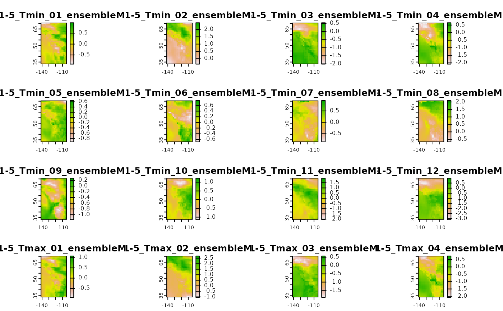

Retrieve GCM anomalies for downscale.
gcm-input-data.Rdgcm_input retrieves anomalies for GCM data, given chosen GCMs, SSPs,
periods and runs.
gcm_hist_input creates GCM historic time series inputs, given chosen GCMs,
years and runs.
gcm_ts_input creates future GCM time series inputs, given chosen GCMs, SSPs,
years and runs.
Usage
gcm_input(
dbCon,
bbox = NULL,
gcm = list_gcm(),
ssp = list_ssp(),
period = list_gcm_period(),
max_run = 0L,
cache = TRUE
)
gcm_hist_input(
dbCon,
bbox = NULL,
gcm = list_gcm(),
years = 1901:1950,
max_run = 0L,
cache = TRUE
)
gcm_ts_input(
dbCon,
bbox = NULL,
gcm = list_gcm(),
ssp = list_ssp(),
years = 2020:2030,
max_run = 0L,
cache = TRUE
)Arguments
- dbCon
A db connection object created by
data_connect.- bbox
numeric. Vector of length 4 giving bounding box of study region, in the order ymax,ymin,xmax,xmin. In general this is created by
get_bb(), but can also be user-defined.- gcm
character. Vector of labels of the global circulation models to use. Can be obtained from
list_gcm(). Default to all GCMs available.- ssp
character. Vector of SSP-RCP scenarios (representative concentration pathways paired with shared socioeconomic pathways). Options are
list_ssp(). Defaults to all scenarios available.- period
character. Vector of labels of the periods to use. Can be obtained from
list_gcm_period(). Defaults to all periods available.- max_run
integer. Maximum number of model runs to include. A value of 0 returns the
ensembleMeanonly. Runs are included in the order they are found in the models data untilmax_runis reached. Defaults to 0L.- cache
logical. Specifying whether to cache new data locally or no. Defaults to
TRUE.- years
Numeric or character vector in
2020:2100. Defaults to2020:2030.
Value
A list of SpatRasters, each with possibly multiple layers, that can
be used with downscale().
A list of SpatRasters, each with possibly multiple layers, that can
be used with downscale().
A list of SpatRasters, each with possibly multiple layers, that can
be used with downscale().
Details
This function returns a list with one slot for each requested GCM. Rasters inside the list contain anomalies for all requested SSPs, runs, and periods.
In general this function should only be used in combination with downscale().
This function returns a list with one slot for each requested GCM. Rasters inside the list contain anomalies for all runs and years.
In general this function should only be used in combination with downscale().
This function returns a list with one slot for each requested GCM. Rasters inside the list contain anomalies for all SSPs, runs and years.
In general this function should only be used in combination with downscale(). Note that if you request multiple runs, multiple SSPs, and a lot of years,
it will take a while to download the data (there's lot of it).
Examples
library(terra)
xyz <- data.frame(lon = runif(10, -140, -106), lat = runif(10, 37, 61), elev = runif(10), id = 1:10)
## get bounding box based on input points
thebb <- get_bb(xyz)
## get database connection
dbCon <- data_connect()
on.exit(try(pool::poolClose(dbCon)))
gcm <- gcm_input(dbCon, thebb, list_gcm()[1], list_ssp()[1])
#> Not fully cached :( Will download more
#> Error in poolCheckout(pool): The pool has been closed.
## show ensemble means only
lyrs <- grep("ensemble", names(gcm$`ACCESS-ESM1-5`))
#> Error in eval(expr, envir, enclos): object 'gcm' not found
plot(gcm$`ACCESS-ESM1-5`[[lyrs]])
#> Error in h(simpleError(msg, call)): error in evaluating the argument 'x' in selecting a method for function 'plot': object 'gcm' not found
{
library(terra)
xyz <- data.frame(lon = runif(10, -140, -106), lat = runif(10, 37, 61), elev = runif(10), id = 1:10)
## get bounding box based on input points
thebb <- get_bb(xyz)
## get database connection
dbCon <- data_connect()
on.exit(try(pool::poolClose(dbCon)))
gcm_hist <- gcm_hist_input(dbCon, thebb, list_gcm()[1])
## show ensemble means only
lyrs <- grep("ensemble", names(gcm_hist$`ACCESS-ESM1-5`))
plot(gcm_hist$`ACCESS-ESM1-5`[[lyrs]])
}
#> Downloading GCM anomalies
#> Caching data...

library(terra)
xyz <- data.frame(lon = runif(10, -140, -106), lat = runif(10, 37, 61), elev = runif(10), id = 1:10)
## get bounding box based on input points
thebb <- get_bb(xyz)
## get database connection
dbCon <- data_connect()
on.exit(try(pool::poolClose(dbCon)))
gcm_ts <- gcm_ts_input(dbCon, thebb, list_gcm()[1], list_ssp()[1])
#> Error in poolCheckout(pool): The pool has been closed.
## show ensemble means only
lyrs <- grep("ensemble", names(gcm_ts$`ACCESS-ESM1-5`))
#> Error in eval(expr, envir, enclos): object 'gcm_ts' not found
plot(gcm_ts$`ACCESS-ESM1-5`[[lyrs]])
#> Error in h(simpleError(msg, call)): error in evaluating the argument 'x' in selecting a method for function 'plot': object 'gcm_ts' not found